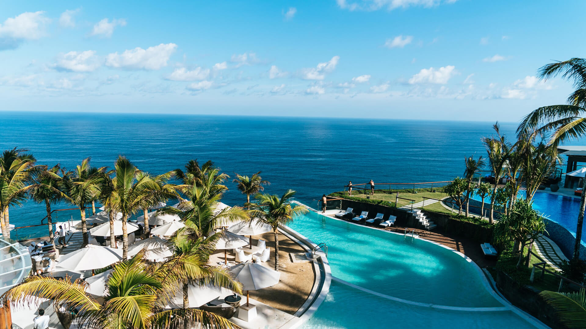

豪華クルーズ船で感じた文化の違いと驚きエピソード！
クルーズ船はまさに「動く高級ホテル」！でも、国籍も文化も違う人たちが集まる空間だからこそ、驚きの連続だった。
まず、食事スタイルの違い！テーブルマナーも国によって違いがあり、「え、それ...
クルーズ船はまさに「動く高級ホテル」！でも、国籍も文化も違う人たちが集まる空間だからこそ、驚きの連続だった。
まず、食事スタイルの違い！テーブルマナーも国によって違いがあり、「え、それ...
実は地元の人だけが知る「隠れた絶景スポット」がある。ガイドブックには載っていない、だけど一度行けば心を奪われるような場所。たとえば...
READ MOREハワイは朝から夜まで楽しめる要素がたっぷり！短い滞在でも1日をフルに使えば、最高の思い出が作れる。
朝早く起きて、ダイヤモンドヘッドに登れば、目の前には...